Csoport tagjai, struktúrája
| Tagok |
Neptun |
| Bordás Milán |
WJB0DC |
| Kriston Ádám |
SYQ7E2 |
| Kamarás Erik |
EN4B5K |
| Pogácsás Benedek |
FM4Z3B |
| Bártfai Bálint |
NWTTCA |
1. Bevezetés
A Devsomnia Rendszer Tervezés dokumentuma
2. Felhasználói felület
A játék során fellelhető felhasználói felületek:
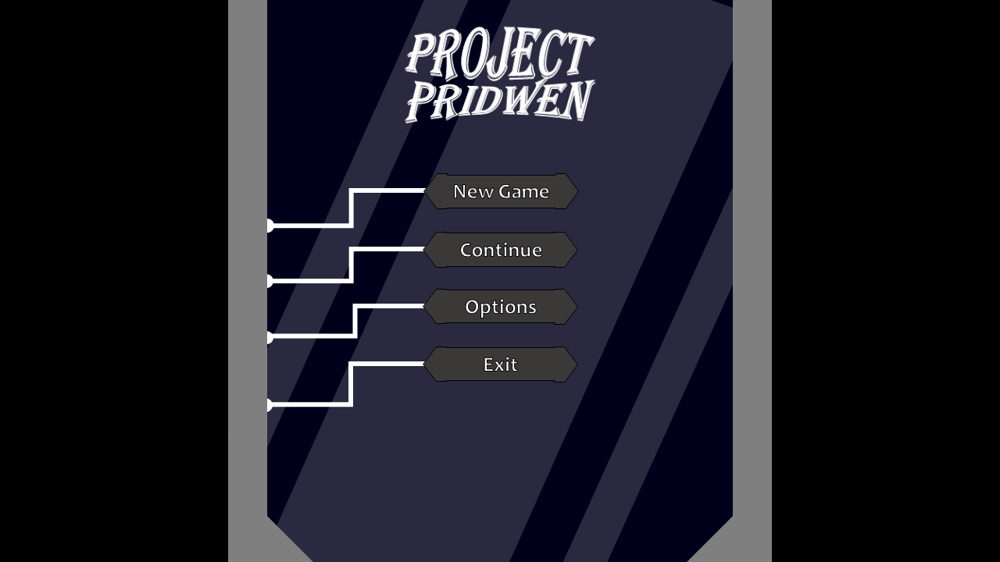
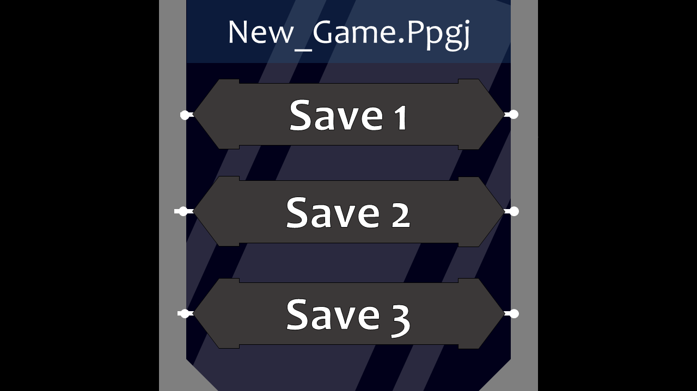
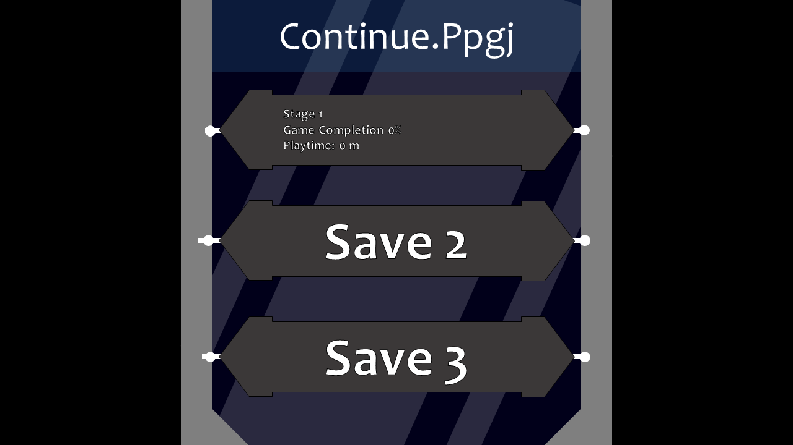
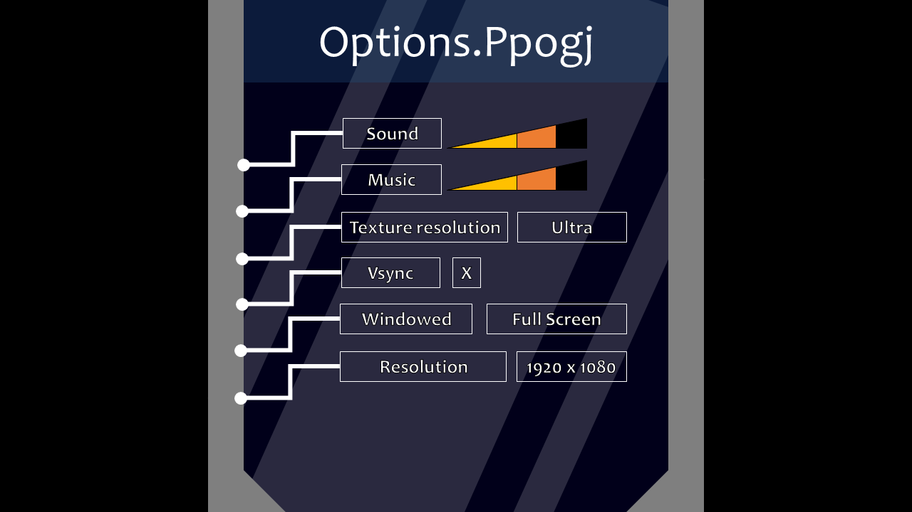
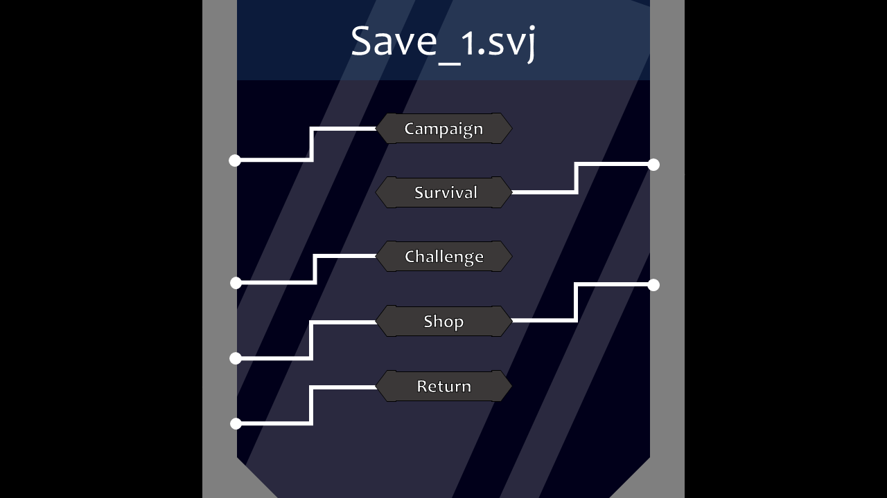
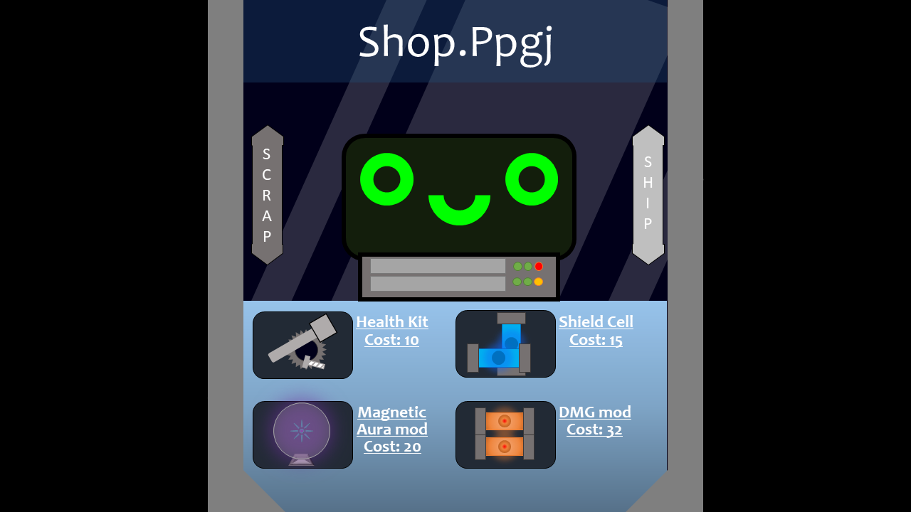
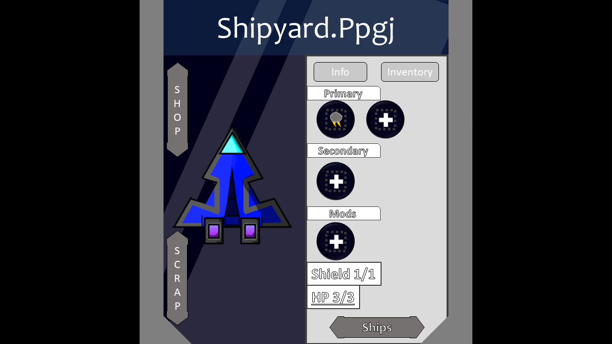
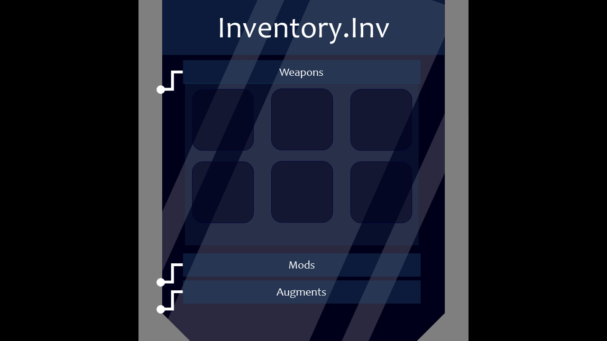
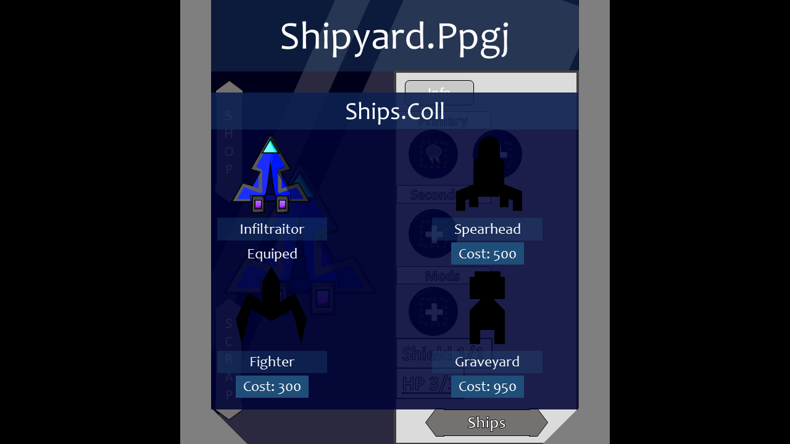
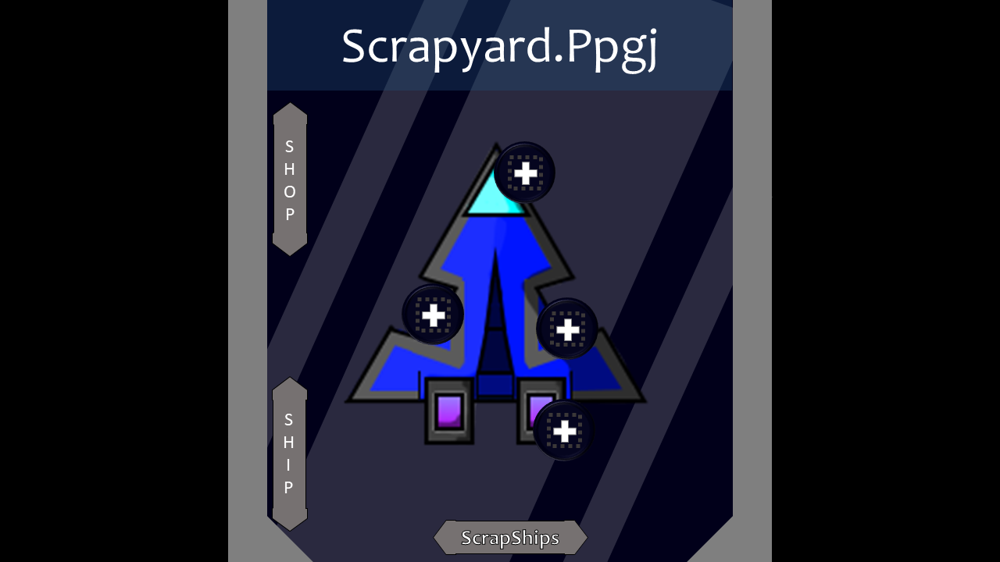
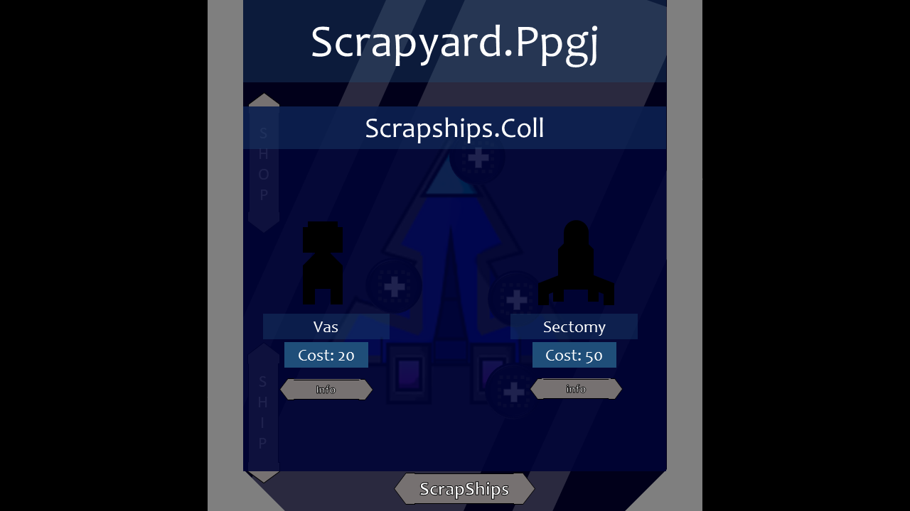
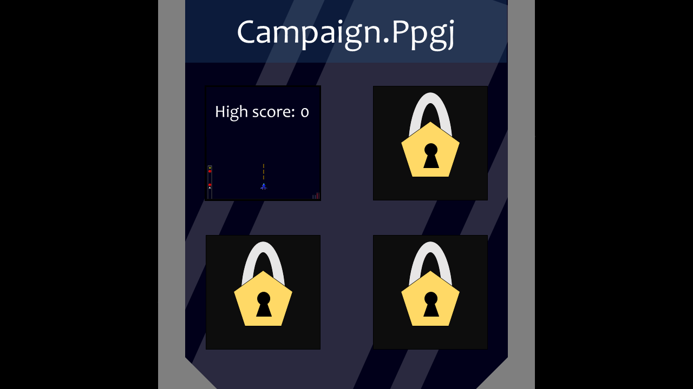
3. Mentések
A játék során a játékos által elért eredményeket el kell mentenie ahhoz, hogy később is megmaradjanak és onnan
tudja
folytatni, ahonnan abbahagyta. Bár régebbi játékok esetén nem mindig volt népszerű, manapság már ez a funkció
alap
szinte minden egyes rendszerben. A miénkben sincs ez másképp. Ehhez szükségünk van egy adatbázisra, amelyben
elmentjük
ezeket a teljesítményeket.
3.1 Mentések menete
Menteni elsősorban kétféleképpen lehet: manuálisan vagy a játék által automatikusan. A mentések kiválasztásakor
a
sorrendet a készítés dátuma fogja meghatározni, fentről lefele legújabbtól legrégebbi.
- Manuális mentés esetén a játékosnak kell a mentést kezdeményeznie a menü megnyitásával majd a „Save”
gomb
lenyomásával. Ekkor feljön a lehetőség, hogy egy új mentést készítsen, vagy egy régebbit írjon felül.
- Automatikus mentés is kétféleképpen fordulhat elő, elsősorban, ha az adott pályákon bizonyos
„checkpoint” -ot ér
el a játékos. Másik lehetőség, hogy adott időszakonként készíti a mentést a játék. Minden automatikus
mentés egy
új mentést hoz létre, egészen addig, amíg el nem ér egy bizonyos felső határt. Ha ezt eléri, akkor az új
automatikus mentés a legrégebbit írja felül.
4. ER Model
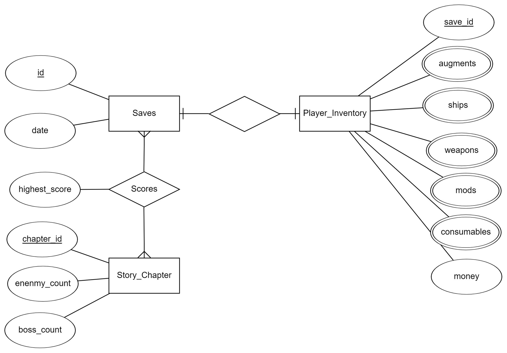
4.1 Relációs Model
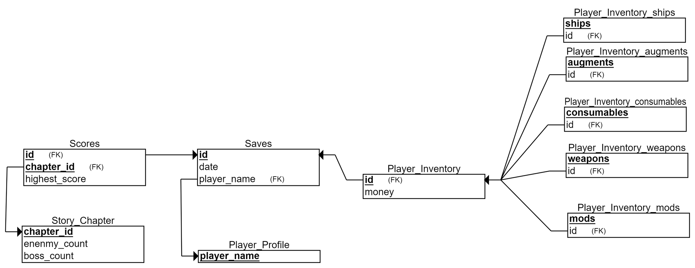
4.2 Egyedek tulajdonságai
Player_Profile egyed
- player_name: A név, amelyet a játékos megad magának. Ennek mindenképpen egyedinek kell lennie, hogy
betudjuk azonosítani a játékost.
Saved egyed
- id: Egy egyedi integer, amely alapján lehet a mentéseket beazonosítani.
- date: A mentés elkészítésének az ideje. A szokásos dátum formátumán túl még a készítés órája és perce is
lementődik.
Player_Inventory egyed
- save_id: A mentés azonosítója.
- money: A játékos által szerzett pénz.
- ships: A játékos által feloldott hajók.
- augments: A játékos által feloldott augment-ek.
- mods: A játékos által feloldott mod-ok.
- weapons: A játékos által feloldott fegyverek.
- consumable: A játékos által megvásárolt consumable-ök, és hogy azokból pontosan mennyi.
Story_Chapter egyed
- chapter_id: A történet fejezetének az azonosítója.
- enemy_count: A fejezet pályáján az összes ellenfelek száma.
- boss_count: A fejezet pályáján a „bossoknak”, vagyis főellenségeknek a száma.
Scores kapcsolat
- highest_score: Itt tároljuk el hogy az adott mentésen mennyi a legmagasabb elért pontszám a kampány
összes fejezetén.
4.3 Egyedek közötti kapcsolatok
Player_Profile – Saves kapcsolat
A Player_Profile és a Saves egyedek között egy-több kapcsolat van, mivel egy játékosnak lehet több mentései is,
de egy bizonyos mentés csak egy játékoshoz tartozhat.
Saves - Player_Inventory kapcsolat
A Player_Profile és a Saves egyedek között egy-egy kapcsolat van, mivel egy mentésen belül csak egy invetory-ja
van a játékosnak.
Saves - Story_Chapter kapcsolat
A Saves és a Story_Chapter egyedek között több-több kapcsolat van, mivel egy mentéshez több története
fejezetet/pályát
lehet feloldani, valamint egy története fejezet/pálya több mentésben is feloldható. Ebből adódik a Scores tábla,
amelynek az adattagja a highest_score, ami eltárolja hogy a mentéseken mennyi volt a legmagasabb pont
fejezetenként.